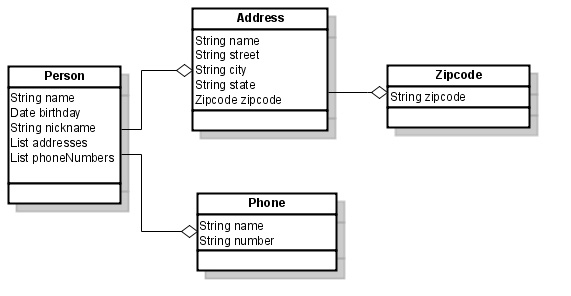

JavaScript Object Notation (aka JSON) is a very popular alternative to XML for transmitting data to the web browser. Flexjson is a lightweight library for serializing Java objects into JSON. What's different about Flexjson is it's control over what gets serialized allowing both deep and shallow copies of objects. Most JSON serializers mimic object serialization libraries and try to serialize the entire object graph from the object being turned into JSON. This causes problems when you want a connected object model in your server, but you can't send that object model to the client because the serialization library will try to send the entire object graph. This makes it very hard to create object oriented models and serialize pieces of that model to the client without sending everything. Other JSON libraries require you to create a lot of boiler plate code to translate your object representation into a JSON object. In this regard I shouldn't have to explain myself, but to keep it short let's me just say I hate boiler plate translation code! Flexjson tries to solve both of these problems by offering a higher level API or dare I say DSL for specifying your intent.
In order to explore Flexjson we will be using the following model. Let's say we're building a PIM or contact management application. Here are some classes we might see in an application like this along with the relationships between them.
In the above diagram you can see Person has many instances of Phone, and has many Addresses. While this is a trival object model it will help us demostrate the ideas behind Flexjson.
The Basics
Flexjson takes a different approach allowing you to control the depth to which it will serialize. It's very similiar in concept to lazy loading in Hibernate which allows you to have a connected object model, but control what objects are loaded out of your database for performance. Let's look at a simple example first to get a feel for how the library works. Say we are serializing an instance of Person. We might do the following:
public String doSomething( Object arg1, ... ) { Person p = ...load a person...; JSONSerializer serializer = new JSONSerializer(); return serializer.serialize( p ); }
The above would produce the following output:
{ "class": "Person", "name": "William Shakespeare", "birthday": -12802392000000, "nickname": "Bill" }
Working With Includes
Looks pretty much like you'd expect. However, our Person object contains more fields than name, birthday, and nickname so what happened to phoneNumbers, and addresses? By default Flexjson serializes the immediate fields of that object. It's just a shallow representation of the object. All collections are not serialized by default. Or said another way any one to many, and many to many relationships are not serizialized by default. Object references are serialized by default. That being many to one and one to one relationships will be serialized by default. This is consistent with other libraries like hibernate and JPA which will eagerly load these relationships by default. But, let's say we wanted to include the phoneNumbers field in our output then we could do the following:
public String doSomething( Object arg1, ... ) { Person p = ...load a person...; return new JSONSerializer().include("phoneNumbers").serialize(p); }
In this example, we're telling the serializer to include the following fields from the target object. Collections are serialized in full including the shallow copy of the objects they contain. So in our example, Person has a List field called phoneNumbers, and that List contains Phone instances. This means Flexjson will send a shallow copy of Person, the List of phoneNumbers, and a shallow copy of each Phone instance within the List. So the output might look like:
{ "class": "Person", "name": "William Shakespeare", "birthday": -12802392000000, "nickname": "Bill" "phoneNumbers": [ { "class": "Phone", "name": "cell", "number": "555-123-4567" }, { "class": "Phone", "name": "home", "number": "555-987-6543" }, { "class": "Phone", "name": "work", "number": "555-678-3542" } ] }
Getting the hang of it? It's pretty simple. If you wanted to send both phoneNumbers and addresses you can call include method twice, or you can include two parameters to the include method using Java's new vararg feature. Personally I prefer the later since I think it makes it shorter and easier to read. But, it's your choice.
public String doSomething( Object arg1, ... ) { Person p = ...load a person...; return new JSONSerializer().include("phoneNumbers", "addresses").serialize(p); }
So in this case we'll only get the street, city, and state, but not the zipcode because that is an object reference. It's an easy fix using the dot notation. Here is an example to include the zipcode with each Address instance.
public String doSomething( Object arg1, ... ) { Person p = ...load a person...; return new JSONSerializer().include("phoneNumbers", "addresses.zipcode").serialize(p); }
Flexjson is smart enough to know you mean the object contained with this collection and not the collection itself. It's also smart enough to know that the addresses reference has to be included in order to include zipcode so you don't have to specify it twice. You can use the dot notation to trace over your object graph very easily.
More on Includes
There is an alternate form of serialize() method that allows you to specify an outer object for collections. There are some javascript libraries like EXTJS (previously known as YUI-EXT) that require this for their JSON data models. However, I haven't found any JSON libraries that offer this type of serialization. Here is an example:
public String getPeople( Object arg1, ... ) { List people = ...load a person...; return new JSONSerializer().include("phoneNumbers").serialize("people", people); }
The resulting JSON would look like the following:
{ "people" : [ { "class": "Person", "name": "Warren Buffet", "birthday": -1241467200000, "nickname": "Oracle of Omaha", "phonNumbers" : [ ... ], }, { "class": "Person", "name": "Steven Jobs", "birthday": -468702000000, "nickname": "Steve", "phonNumbers" : [ ... ], } ] }
Working With Excludes
Not only can you include, but you can specify it in terms of exclude as well. The exclude() method allows you to exclude certain fields from serilization. This can come in handy if you have special fields that you don't want sent to the client like passwords, or secret data that should remain on the server.
public String doSomething( Object arg1, ... ) { User u = ...load a user...; return new JSONSerializer().exclude("password").include("hobbies").serialize(p); }
Using dot notation with exludes has a subtle difference in it's use when compared with includes. If you exclude a
nested field it implies that the rest of the parent object is included. So if I say
exclude("head.rightEye.retinalScan").
The retinalScan member of rightEye field will be excluded, but both rightEye and head field will be included.
The reason is in order to exclude retinalScan field you have to include the rightEye member. If you didn't then
it doesn't change anything because retinalScan wasn't going to be included in the first place. Said another way
it's only the last field that is excluded all other parent fields are included.
Excluding Using Annotations
Always having to do your excludes in this manner can be cumbersome especially if you always intend something to be excluded or included. Flexjson provides a way to express this using annotations. The JSON annotation can be used to mark a field in the object as included by default. Annotations can be placed on the methods or fields. A good example of this might be the Address object that contains a reference to Zipcode object. Since Zipcode is an integral part of every Address (in the US) then it might make more sense for us to default this with the annotation. So in our Address object we could do the following:
public class Address { private String name; private String street; private String city; private String state; private Zipcode zipcode; @JSON public Zipcode getZipcode() { } }
Annotations can improve your security so that fields that shouldn't be sent over the wire ever can be fixed in one place. That way you keep your code more DRY, and that prevents accidental security flaws. Consider if we store the a hashed version of a password in our User object.
public class User { private String login; private String hashedPassword; private Date lastLogin; @JSON(include=false) public String getHashedPassword() { } }
Code Gone Wildcard
In 1.5 you can now specify wildcards in your include() and exclude() method calls. This makes it easy to include or exclude several fields very easily. It's very common for people to want to remove the class attribute written to the stream. With wildcards it becomes very easy to accomplish this. For example:
public String doSomething( Object arg1, ... ) { User u = ...load a user...; return new JSONSerializer().exclude("*.class").serialize(p); }
Any path ending with class will now be excluded from the output. Wildcards match any depth you specify. So it doesn't matter how deep your object path has gotten. An exclude of *.class will match to any path depth. So if flexjson is serializing the field with path of "foo.bar.class" the "*" in "*.class" will match foo.bar.
Wildcards do not expand the depth to which you are serializing in most cases. They only operate in the depth you have specified. That means if you specify *.list, paths like foo.list would be serialized, but foo.bar.list would not. If you wanted foo.bar.list you would need have an include for foo.bar from another statement. Same goes for things like *.class. Every object has a class member because of Object.getClass(). However, *.class won't extend the depth of your serialization. There are cases where serialization depth will be expanded. You have to be careful when doing specifying wildcards with recursive structures. If you had a tree structure and did an include on *.children it will expand the depth of your serialization all the way. The other case where wildcards will expand your serialization is "*". That is the same as doing a deep serialization so be careful using it.
Order of Evaluation
Order of evaluation has changed as of 1.5. Now that we've discussed includes and excludes let's talk about order of evaluation. What happens if I include a field then I exclude that same field later? What will Flexjson do? The answer is includes and excludes are evaluated in order they were added. This is important with the introduction of wildcards. Say I want to serialize just two fields of an object. I can do the following:
public String doSomething( Object arg1, ... ) { User u = ...load a user...; return new JSONSerializer().include("username").exclude("*").serialize(p); }
The above code would serialize just the username field from the user object, but it would exclude all other fields. If I reversed the order of the include and exclude calls it would exclude all of the fields, and the username field wouldn't be included? Why is that? That's because internally flexjson would have a list of expressions. Think of it like a list where the order is the following:
[ "*", "username" ];
Flexjson would visit each field in the User object, and evaluate it against all of the rules in the list. It starts the head of the list and stops once it finds the first match. In this case "*" would match all fields of User object, and it would exclude it thus never reaching the "username" entry.
Deep Serialization
In 1.2 there was a new feature added to perform a deep serialization of the object using the deepSerialize() method. As with serialize() method deepSerialize() method will use includes, excludes, and annotations to figure out what you want sent. However, includes are generally redundant except in the case where you want override an excluding annotation on a field. Deep serialization will not serialize cycles in your graph so if you have a bi directional relationship say parent has a child and child has a parent. The back reference from child to parent won't be included in the JSON output. This is the same for shallow serialization as well. Here is a quick example:
public String doSomething( Object arg1, ... ) { Person p = ...load a person...; return new JSONSerializer().deepSerialize(p); // send the entire graph starting at person }
Deep serialization should be used sparingly, and reserved for only cases where you really understand what is being serialized. Deep serialization can send a lot more data that you anticipated if you use it frivolously.
Transformers More Than Meets the Eye
In 1.5 an exciting new feature was added. Let's say we're have some JSON text data and we're going to place it into the page, but this data contains unfriendly HTML. By that I mean you have the possibility of having things like <, >, or &. We need to replace those parts of our text with <, >, &. How do you do it? Well in prior versions you'd need to put special getters/setters on your domain model to perform the conversion, or you'd have to do it on the client. Oh yes I'm sure there are much more bizarre things you could do, but these are the "cleanest" solutions.
Transformers address this problem by letting you specify a transformer object to particpate in serialization with Flexjson. Flexjson includes a very simple HTMLEncoder to do entity replacement for you. Here's how it works.
public String doSomething( Object arg1, ... ) { EMail mail = ...load an email...; return new JSONSerializer().transform( new HTMLEncoder(), "to", "cc", "bcc", "from").serialize(p); }
In the above code the transform() method registers the HTMLEncoder transformer with serializer for 4 fields. Email messages usually have something like the following in the recepient fields: "Plug 1" <plug1@delasoul.com>. Unfortunately, HTML doesn't like the < and > in them so you need to HTML encode them. The transform method supports the dot notation, but it doesn't support wildcards. This makes the algorithm for finding the Transformer instance faster.
Transformers are very interesting in that you can use them for all sorts of problems. Say you accept Markdown notation on your new wiki software. You store the Markdown text in the DB, and later render the HTML using the Transformer architecture.
Say you only want to accept some of the HTML tags from the user for security reasons. Transformers could filter out any nefarious data from your objects when sending it through JSON. Transformers are very useful, and Flexjson will include more out of the box Transformers in the future.
Deserialization
Deserialization is the process of taking JSON text binding those values into Objects. This process can be quite complex as JSON text contains no typing information. Mapping JSON data types onto static Java objects is tricky. Flexjson supports doing this through the JSONDeserializer class.
JSONDeserializer takes as input a json string and produces a static typed object graph from that json representation. By default it uses the class property in the json data in order to map the untyped generic json data into a specific Java type. This works quite well for JSON generated from flexjson. Let's just look at the simplest case using the class attributes in your json, and how JSONSerializer and JSONDeserializer nicely pair together out of the box.
Say we have a simple object like Hero (see the superhero package under the test and mock). To create a json represenation of Hero we'd do the following:
Hero harveyBirdman = new Hero("Harvey Birdman", new SecretIdentity("Attorney At Law"), new SecretLair("Sebben & Sebben") ); String jsonHarvey = new JSONSerialize().serialize(hero);
Now to reconsitute Harvey to fight for the law we'd use JSONDeserializer like so:
Hero hero = new JSONDeserializer<Hero>().deserialize( jsonHarvey );
Deserialize Without the Training Wheels
Pretty easy when all the type information is included with the JSON data. Now let's look at the more difficult case of how we might reconstitute something missing type info.
Let's exclude the class attribute from our json like so:
String jsonHarvey = new JSONSerialize().exclude("*.class").serialize(hero);
The big trick here is to replace that type information when we instantiate the deserializer. To do that we'll use the flexjson.JSONDeserializer.use(String, Class) method like so:
Hero hero = new JSONDeserializer<Hero>().use( null, Hero.class ).deserialize( jsonHarvey );
Like riding a horse with no saddle without our type information isn't it? So what is happening here is we've registered the Hero class onto a path in the json object graph. We use null here to mean the root of the json object. If we were naming our root we'd include that name as the path to our root in the JSON. The flexjson.JSONDeserializer.use(String, Class) method uses the object graph path to attach certain classes to those locations. So, when the deserializer is deserializing it knows where it is in the object graph. It uses that graph path to look up the java class it should use when reconstituting the object.
Notice that all we registered was Hero class how did it know to instantiate SecretLair and SecretIdentity too? That's because flexjson uses the target type (in this case Hero) to figure out the other types by inspecting that class. Meaning that we didn't have to tell it about SecretLair or SecretIdentity because it can figure that out by inspecting the types in the Hero class. Pretty cool.
Polymorphism, Subclasses, and Interfaces
Where this fails is when we starting working with interfaces, abstract classes, and subclasses. Our friend polymorphism has rained on our parade. Why? Well if you haven't realized by now inspecting the type from our target class won't help us because either it's not a concrete class or we can't tell the subclass by looking at the super class alone. Next section we're going to stand up on our bare back horse. Ready? Let's do it.
Before we showed how the flexjson.JSONDeserializer.use(String, Class) method would allow us to plug in a single class for a given path. That might work when you know exactly which class you want to instantiate, but when the class type depends on external factors we really need a way to specify several possibilities. That's where the second version of {@link flexjson.JSONDeserializer#use(String, ClassLocator)} comes into play. A ClassLocator allows you to use a stradegy for finding which java Class you want to attach at a particular object path.
flexjson.JSONDeserializer.use(String, ClassLocator) have access to the intermediate form of the object as a Map. Given the Map at the object path the ClassLocator figures out which Class Flexjson will bind the parameters into that object.
Let's take a look at how this can be done using our Hero class. All Heros have a list of super powers. These super powers are things like X Ray Vision, Heat Vision, Flight, etc. Each super power is represented by a subclass of SuperPower. If we serialize a Hero without class information embedded we'll need a way to figure out which subclass to instantiate when we deserialize. In this example I'm going to use a Transformer during serialization to strip off the package on the class attribute. This is not normally how you might do this, but I'm being lazy and doing a quick example.
String json = new JSONSerializer() .include("powers.class") .transform( new SimpleTransformer(), "powers.class") .exclude("*.class") .serialize( superhero ); Hero hero = new JSONDeserializer<Hero>() .use("powers.class", new PackageClassLocator()) .deserialize( json );
That's a very contrived example because all I'm doing is stripping off the package and then adding back that missing package in my ClassLocator. A more typical case would be when there is some typing information included in your JSON objects that can be used as a discrimintor between the various types of Classes you need. The good news is flexjson provides a ClassLocator out of the box that provides this so you don't have to rewrite this.
TypeLocator class uses a field in the JSON to select a particular class you want to use. Here is a quick example of this. Say for example, in our JSON we have a field called "type" that is either a square, circle, or triangle. Based on the value of that field we want to use Square, Circle, or Triangle classes to be instantiated.
String json = new JSONSerializer().serialize( shapeList, "shapes" ); ShapeList shapes = new JSONDeserializer<ShapeList>() .use("shapes", new TypeLocator<String>("type") .add("square", Square.class) ) .add("circle", Circle.class) ) .add("triangle", Triangle.class) ) ) .deserialize( json )
In this example the deserialization definition is a little longer, but not bad. We're creating a TypeLocator instance saying the field that controls the typing is called "type", and when the value is "square" we want to use Square class, when it's "circle" use Circle class, and so on. TypeLocator is a generic class that lets you specify the datatype of the discriminator field. In this case we're using strings, but you could use integers just the same.
In this example I'm serializing a list of shapes, and I'm naming my list "shapes" which means my root isn't null anymore. This is just to show how paths work, and doesn't really have any relation to the use of TypeLocator.
Collections, Maps, and Generics
Collections and Maps are somewhat special cases of interfaces because they contain objects within them that aren't accessible through setter and getter methods. Normally, if you use generics and specify a concrete class as the generic class contained then you won't have anything else to do. However, mix in an interface or abstract class and you'll have tell the deserializer the types contained within.
Starting with 1.9 you can specify both the concrete class used for the collection class as well as the contained concrete class. By appending "values" to the path of any collection you can configure the concrete class of the contained class.
For example, say a Group object contains a Collection of Groupable instances where Groupable is an interface. We'll need to specify what concrete class to use for the Groupable. For simplicity in this example we'll assume all Groupable instances can be represented by a single concrete class. If the path to the Group's instance variable members of type Collection<Groupable>. So we might do the following:
new JSONDeserializer().use( "group.members.values", ConcreteGroupable.class )
The path "group.members" refers to the actual Collection instance. If you wanted to specify the Collection's implementation you could do the following:
new JSONDeserializer().use("group.members", LinkedList.class ).use( "group.members.values", ConcreteGroupable.class )
Maps support specifying key by append "keys" to the path and the values by appending "values" just like Collections. You don't have to specify the keys of the Map if they are one of the JSON native types like: String, or Double.
ObjectFactory
ObjectFactory are the underpinnings of the JSONDeserializer. All object creation pass through some type of ObjectFactory. Starting with 1.9 you can specify your own implementation and attach these to either paths or classes. ObjectFactories can be thought of as companions to Transformers in JSONSerializer.
For example, say we want to export dates as yyyy.MM.dd using the DateTransformer. We can do that easily using transform() method on JSONSerializer. Now let's read this back in by registering a DateTransformer as an ObjectFactory for "person.birthdate".
new JSONDeserializer().use("person.birthdate", new DateTransformer("yyyy.MM.dd") ).deserialize( people );
To use this pattern for all Dates you can register on the Date class. For example:
new JSONDeserializer().use(Date.class, new DateTransformer("yyyy.MM.dd") ).deserialize( people );
Deserializing has Rules for your Java Objects
All objects that pass through the deserializer must have a no argument constructor. The no argument constructor does not have to be public. That allows you to maintain some encapsulation. JSONDeserializer will bind parameters using setter methods of the objects instantiated if available. If a setter method is not available it will using reflection to set the value directly into the field. You can use setter methods transform the any data from json into the internal object structure you want. That way the JSON structure can be different from your Java object structure. The works very much in the same way getters do for the JSONSerializer.
Thread safety and Reuse
Finally, JSONSerializer and JSONDeserializer instances can be reused to serialize/deserialize many objects of the same type. Once you instantiate the object you can reuse it across multiple threads so long as you don't call include or exclude, or use methods. Typically this isn't an issue since you might follow this pattern of instantiation:
public class PersonController { JSONSerializer personSerializer; public PersonController() { personSerializer = new JSONSerializer().include("addresses.zipcdoe"); } public String listPerson() { Person p = ....; return personSerializer.serialize( p ); } public String editPerson() { Person p = ....; return personSerializer.serialize( p ); } }
The End
That's really all you need to know about Flexjson. It's really just that simple and lightweight. Please give me some feedback. I'd love to hear about improvements or new features you would like added. Email me at charlie DOT hubbard ( I don't want spam so this is here to stop harvesters ) AT gmail DOT com.